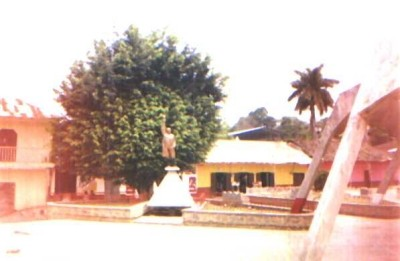

Atractivo Turístico
Cuenta con la Iglesia que fue construida por los agustinos en el siglo XVI.
Se encuentran imágenes sobre retablos que datan del siglo XVI en el interior de la iglesia, así como pinturas al óleo.

Tradiciones
El 15 y 16 de septiembre, celebran las fiestas patrias con una reunión de 18 grupos de danzantes indígenas. Del 8 al 12 de diciembre, celebran la fiesta en honor a la Virgen de Guadalupe, con procesiones, danzas, ceremonias religiosas, juegos pirotécnicos y mecánicos.
Traje Típico
En el hombre, camisa y pantalón de manta, huaraches y huaparra al hombro. En la mujer, falda, blusa, rebozo y huaraches.